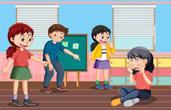

El acoso escolar o bullying es la exposición que sufre un niño a daños físicos y psicológicos de forma intencionada y reiterada por parte de otro, o de un grupo de ellos, cuando acude al colegio.
El acosador aprovecha un desequilibrio de poder que existe entre él y su víctima para conseguir un beneficio (material o no), mientras que el acosado se siente indefenso y puede desarrollar una serie de trastornos psicológicos que afectan directamente a su salud o incluso, en situaciones extremas, conductas autodestructivas.
El bullying escolar se suele producir durante el recreo, en la fila para entrar a clase, en los baños, los pasillos, los cambios de clase, al entrar y salir del centro, en el transporte escolar o en el comedor.
 REGRESAR